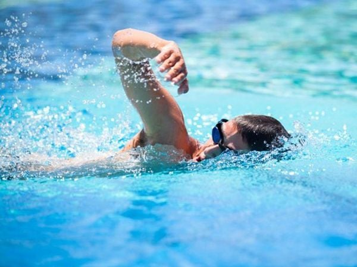
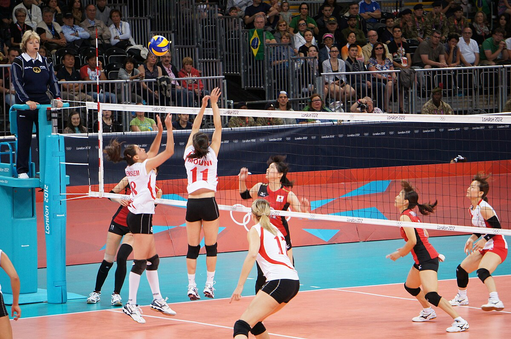
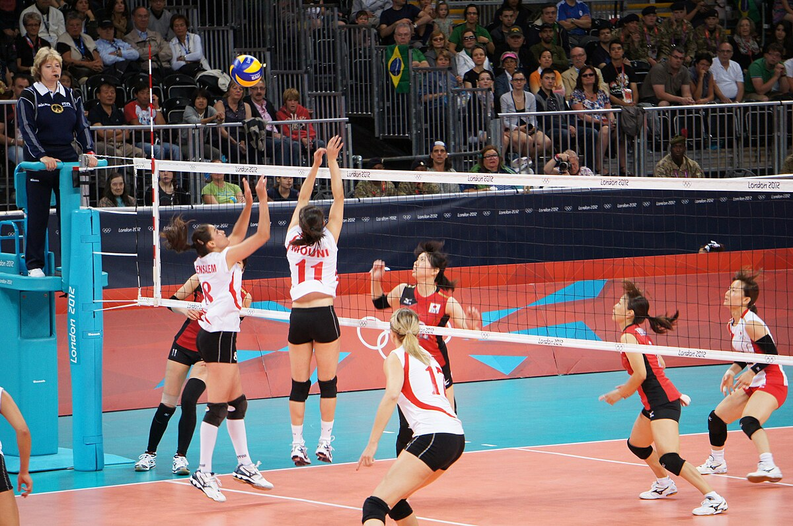
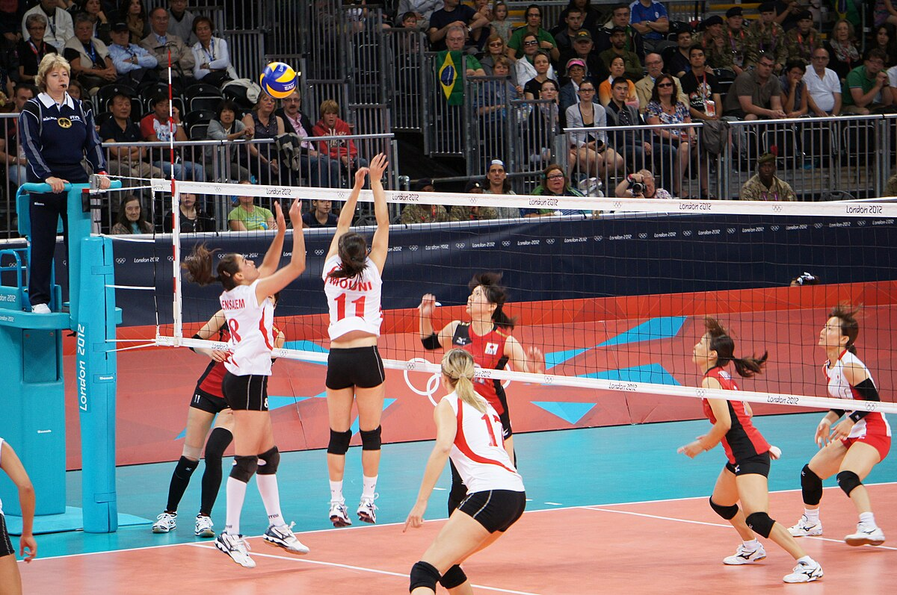

Chèn hình ảnh
Theo dõi lịch hoạt động các CLB thể thao
 

Trường THPT Hoàng Hoa Thám có bề dày thành tích về học tập và các hoạt động thể thao, văn nghệ của thành phố.
Các câu lạc bộ ngoại khóa hoạt động sôi nổi và luôn được nhà trường tạo điều kiện để sinh hoạt
Những năm qua, trường đạt nhiều thành tích trong các cuoocj thi cấp thành phố, quận:
